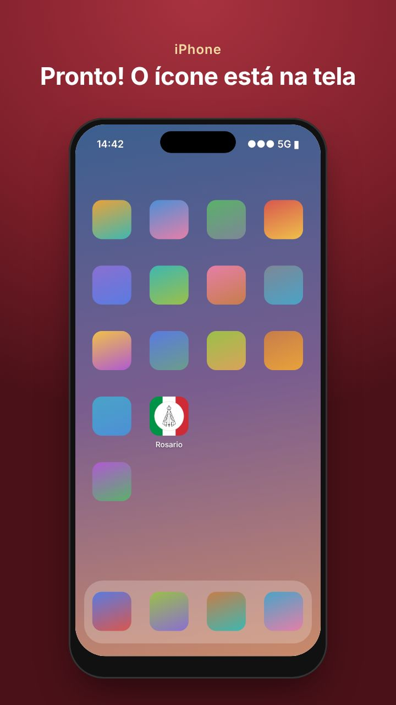
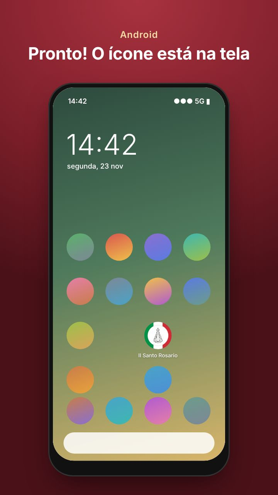

O terço na sua tela inicial
Instale o Il Santo Rosario como um app: um toque no ícone e você já está rezando, até sem internet.


No iPhone
- Abra o link no Safari
- Toque em •••
- Compartilhar
- Adicionar à Tela de Início
- Toque em Adicionar
Em iPhones mais antigos o botão Compartilhar já aparece na barra de baixo, sem o •••.
No Android
- Abra o link no Chrome
- Toque no menu ⋮
- Adicionar à tela inicial
- Confirme em Adicionar
Em alguns celulares a opção se chama “Instalar app”. Funciona igual.
Antes de rezar
Abra uma vez com internetO app guarda tudo no celular. Depois funciona sem conexão, até no avião.
Use o navegador certoNo iPhone, o Safari. No Android, o Chrome. Se o link abriu dentro do WhatsApp ou do Instagram, toque em “Abrir no navegador” primeiro.
Atualizações chegam sozinhasQuando houver versão nova, basta abrir o app com internet.
Só os vídeos do YouTubeprecisam de conexão. O terço, as orações e o modo carro não.
Preghiamo!
Pregate tutti i giorni il Santo Rosario.
Abbiate fiducia, non temete.
Peça o link do app a quem te enviou esta página.
Feito por Marcelo Ratto para aprender a rezar o terço em italiano. Distribuição gratuita.